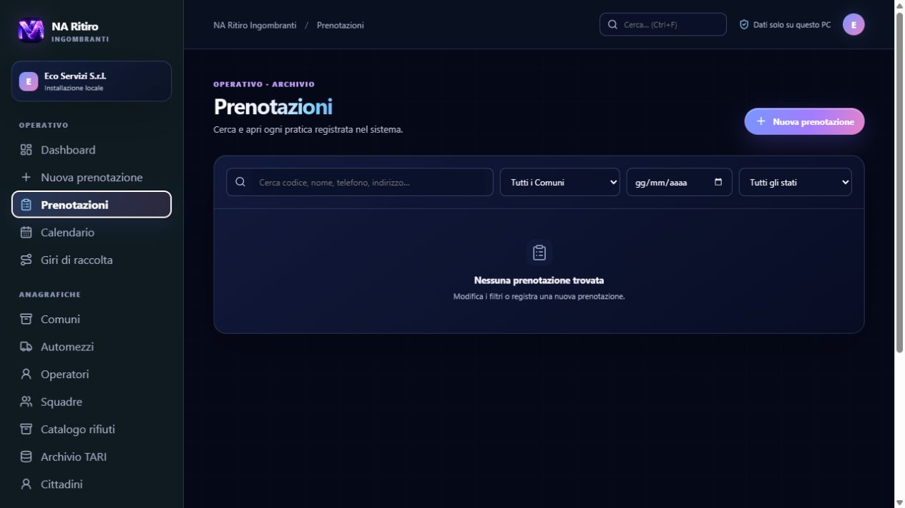
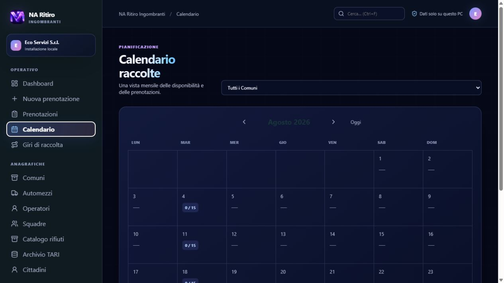
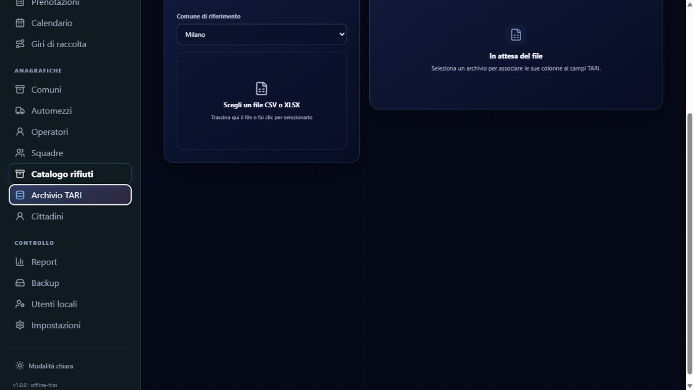
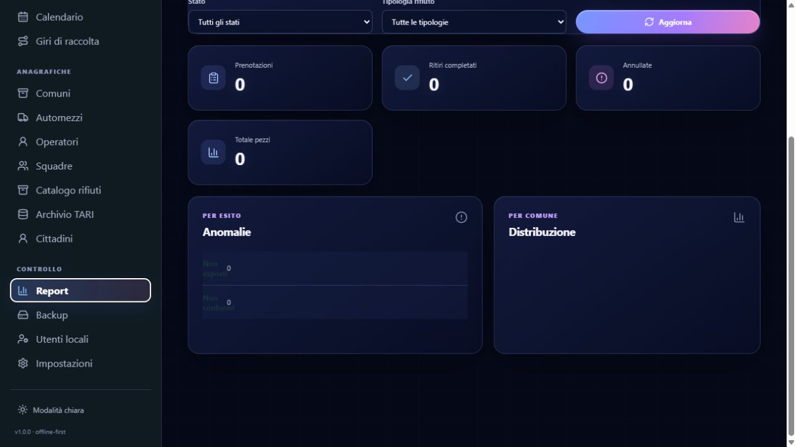

Una richiesta arriva al telefono. Qualcuno deve verificare il Comune, trovare una data disponibile, raccogliere i dati del cittadino, capire quale materiale verrà esposto e inserirlo nel giro corretto.
Quando queste informazioni restano distribuite tra telefonate, fogli, messaggi e appunti, il lavoro non si ferma: diventa semplicemente più difficile da controllare. Una prenotazione può essere dimenticata, una capacità giornaliera superata, un indirizzo recuperato all'ultimo momento o un esito operativo non registrato.
Da questo bisogno nasce NA Ritiro Ingombranti, un sistema progettato per seguire il servizio dall'inserimento della richiesta fino al controllo finale, mantenendo i dati in un archivio locale.
Dalla Dashboard alla nuova richiesta
La Dashboard porta in primo piano ciò che serve all'inizio della giornata: ritiri previsti, prenotazioni odierne, Comuni coinvolti, prossimo giorno di raccolta, capacità occupata e attività del mese.
Non è soltanto una schermata riepilogativa: da qui si passa alla nuova prenotazione, con i dati necessari per trasformare una richiesta telefonica in un'attività tracciabile.

Dalla richiesta alla prenotazione
Il flusso comincia scegliendo Comune e data. Poi si registrano i dati del cittadino, l'indirizzo e le tipologie di rifiuto, con dimensione, quantità e note utili alla squadra.
Prima del salvataggio è possibile controllare limiti, duplicati e corrispondenza con l'archivio TARI. La richiesta entra così nel sistema con le informazioni necessarie per essere cercata, filtrata e pianificata.

Richiesta chiara
Dati del cittadino, indirizzo, civico, rifiuti e note raccolti nello stesso flusso.
Stato tracciabile
Ogni richiesta può passare da prenotata a pianificata, in corso, ritirata o a un esito operativo.
Ricerca immediata
Elenco filtrabile per testo, Comune, data e stato, con dettaglio della singola prenotazione.

Una data disponibile non è solo una data libera
Il Calendario aiuta a leggere il mese prima di assegnare nuove richieste. Le giornate mostrano disponibilità, capacità e prenotazioni, così il lavoro può essere distribuito con maggiore consapevolezza.
Le frecce cambiano mese, il comando Oggi riporta al periodo corrente e la selezione di un giorno apre il dettaglio operativo. È un passaggio semplice, ma utile per evitare di ragionare su date isolate.
Dal calendario al giro di raccolta
Quando le richieste sono pronte, la pianificazione raccoglie Comune, data, squadra e automezzo nello stesso passaggio. La selezione automatica permette di includere le prenotazioni compatibili; in alternativa, il giro può essere costruito manualmente scegliendo le fermate una per una.
Nel dettaglio del giro le fermate possono essere riordinate, l'indirizzo e lo stato restano visibili e la stampa è pronta per essere utilizzata dalla squadra. Quando una prenotazione entra in un giro, il suo stato diventa PIANIFICATA.
Le anagrafiche fanno funzionare il flusso
Comuni, automezzi, operatori, squadre e catalogo rifiuti non sono archivi separati dal lavoro quotidiano. Sono le informazioni che alimentano prenotazioni, calendario e giri.
Per ogni Comune si possono mantenere codice breve, limiti giornalieri e giorni di raccolta. Gli automezzi raccolgono targa, capacità e stato; operatori e squadre aiutano a costruire una pianificazione coerente; il catalogo mantiene ordinate le tipologie e le dimensioni dei rifiuti.

Comuni
Giorni di raccolta, limiti e capacità disponibili per pianificare meglio.
Risorse
Automezzi, operatori e squadre mantenuti aggiornati e realmente utilizzabili.
Catalogo
Tipologie e dimensioni dei rifiuti coerenti con il flusso di prenotazione.
Controllare il dato prima del servizio
L'Archivio TARI permette di importare un file per Comune, verificare l'anteprima e associare le colonne a nome, codice fiscale, indirizzo, civico e codice utenza.
Questo controllo non sostituisce il lavoro dell'operatore, ma crea un riferimento ordinato per verificare una richiesta prima di inserirla o durante la consultazione del cittadino.

Dalla raccolta al controllo
Il lavoro non termina quando il giro viene stampato. Cittadini e Report aiutano a ricostruire lo storico, leggere gli esiti e osservare l'andamento del servizio.
La ricerca cittadini mette in relazione dati, rifiuti, esiti e cronologia. I Report possono essere filtrati per Comune, intervallo date, stato e tipologia di rifiuto, con esportazioni CSV o XLSX quando serve lavorare sui dati anche fuori dall'applicazione.


Stesso servizio, due modalità visive
La modalità midnight e la modalità chiara cambiano l'aspetto dell'interfaccia, non i dati. Il menu laterale resta organizzato per Operativo, Anagrafiche e Controllo, così la logica del lavoro rimane riconoscibile anche quando cambia il tema.
È un dettaglio progettuale importante per un'applicazione usata ogni giorno: l'interfaccia deve aiutare a orientarsi senza aggiungere complessità.
Un flusso quotidiano semplice da seguire
La struttura dell'applicazione accompagna un ordine naturale:
- controllare la Dashboard e la capacità disponibile;
- verificare il Calendario;
- inserire le nuove prenotazioni e controllare duplicati e TARI;
- creare e stampare i Giri di raccolta;
- aggiornare gli stati durante il servizio;
- leggere Report e anomalie;
- eseguire il backup secondo la procedura aziendale.
Il valore di un sistema gestionale non sta nel sommare schermate, ma nel fare in modo che ogni schermata prepari il passaggio successivo.
Organizzare meglio la raccolta degli ingombranti
NA Ritiro Ingombranti riunisce il percorso completo: dalla prima richiesta alla pianificazione, dall'esecuzione allo storico, con dati locali e strumenti pensati per il lavoro quotidiano.
Un servizio più leggibile comincia da informazioni più ordinate.
Il download è gratuito dal Microsoft Store; per utilizzare l'app è richiesto un abbonamento mensile o annuale.